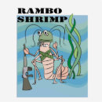

Fatos sobre o Stomatopoda
Conheça oOdontodactylus scyllarus
- Reino: Animalia
- Filo: Arthropoda
- Subfilo: Crustaces
- Classe: Malacostraca
- Subclasse: Hoplocarida
- Ordem: Stomatopoda
Os olhos
Enquanto os cachorros são capazes de ver 2 cores (verde e azul) e os seres humanos capazes de verem 3 (verde, azul e vermelho), o Stomatopoda é capaz dever 16 cores diferentes!
O matador
Aquários geralmente não mantem esse animal pois ele tende amatar todas as outras criaturasque dividem o tanque com ele, além de que ele é capaz dequebrar o vidrodo seu aquário!
